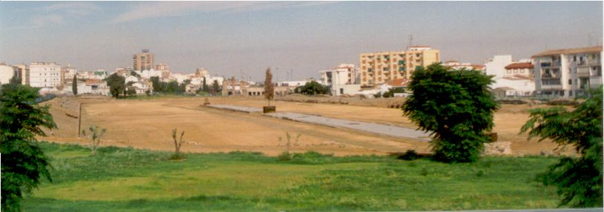
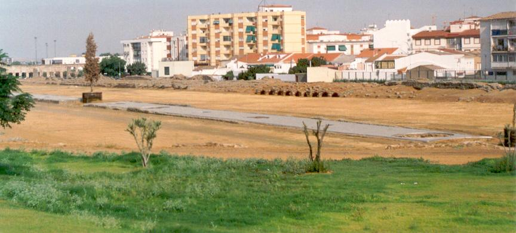

|
Circo
Con toda probabilidad era el espectáculo que más personas atraía. Generalmente los espectáculos eran pagados por la clase dirigente en busca de votos o propaganda de su persona. Es el mayor de los edificios dedicados al ocio público. El circo de Mérida es uno de los pocos circos existente en los cuales se puede apreciar con totalidad toda su planta. Situado a las afueras de la muralla junto a la calzada que se dirigía a Toletum y Corduba. Construido posiblemente en los primeros años del siglo I tuvo un aforo de unos 30.000 espectadores, lo que le convierte en uno de los mayores del mundo romano. Su planta mide 400m de largo y 115m de ancho. La fachada estaría revestida de granito, con pilastras adosadas del mismo material, realzando su decoración. Las "cáveas" o gradas se dividían de forma clásica. Las gradas sobre un alto podium, se extienden sobre los dos lados mayores. Aprovechando la pendiente natural del terreno se sitúa la grada sur, y sobre bóvedas se asienta la grada norte. En el siglo pasado Laborde, llego a apreciar 11 gradas. En base a una mejor visibilidad estarían situadas las tribunas, que estarían ocupadas por las autoridades, las personas que sufragaban los juegos y los jueces del espectáculo. Ver video
 La arena con una extensión de 30.000.-m2, era donde se efectuaban las competiciones. En el centro y dividiéndola en dos se halla la "spina", que mide 233m, plataforma en torno a la cual se desarrollaban las carreras de carros. Era la zona más bella y decorada, con esculturas y obeliscos, solo quedan los restos de su cimentación. Las carreras se desarrollaban en carros, conducidos por un "auriga", conductor de carros, y tirados por dos caballos "bigas" o cuatro "cuadrigas" . Cada carrera constaba de siete vueltas y las metas estarían en ambos vértices de la "spina". Una de las más bellas y fieles reproducciones de este espectáculo, la podemos ver en la película Ben-Hur
.  En uno de sus lados en el Oeste se hallaba la "porta pompae", puerta de los desfiles, de donde partía el cortejo previo a la competición, compuesto por músicos, aurigas participantes, sacerdotes, imágenes de dioses..... A ambos lados de esta estaban las "cárceres", cocheras, con seis a cada lado. Estaban divididos por pilares cuadrangulares y eran utilizadas para posicionar los carros antes de su salida a la arena. Con la implantación oficial del cristianismo, sucedió lo mismo que en el Teatro, Anfiteatro y demás recintos dedicados al ocio. En los concilios de Elvira y Arlés, celebrados a principios del siglo IV, fue donde prohibieron las profesiones de aurigas y cómicos. Pero en torno a los años 337-340 se llevo a cabo una reforma por uno de los hijos de Constantino. El motivo; porque se “derrumba de viejo”, y se llenó de agua según consta en la inscripción hallada junto a las cárceres. Se supone que siguió utilizándose haciendo caso omiso al edicto eclesiástico, ya que en el siglo VI, según datan la lapida sepulcral del auriga Sabiano, enterrado en la basílica de Casa Herrera, aun se celebraban carreras. La pasión que despertaba este espectáculo se puede apreciar en las pinturas, esculturas y textos relativos al mismo, destacando el auriga Lusitano Cayo Apuleyo Diocles, que triunfo en Roma como mejor conductor de carros de todos los tiempos y se supone que su carrera empezó en el circo de Emerita. |
|
Ver Circos Romanos
|
||
|
Vida en Emérita
|
||
|
Espectáculos y ocio |
Periferia e infraestructuras |
|